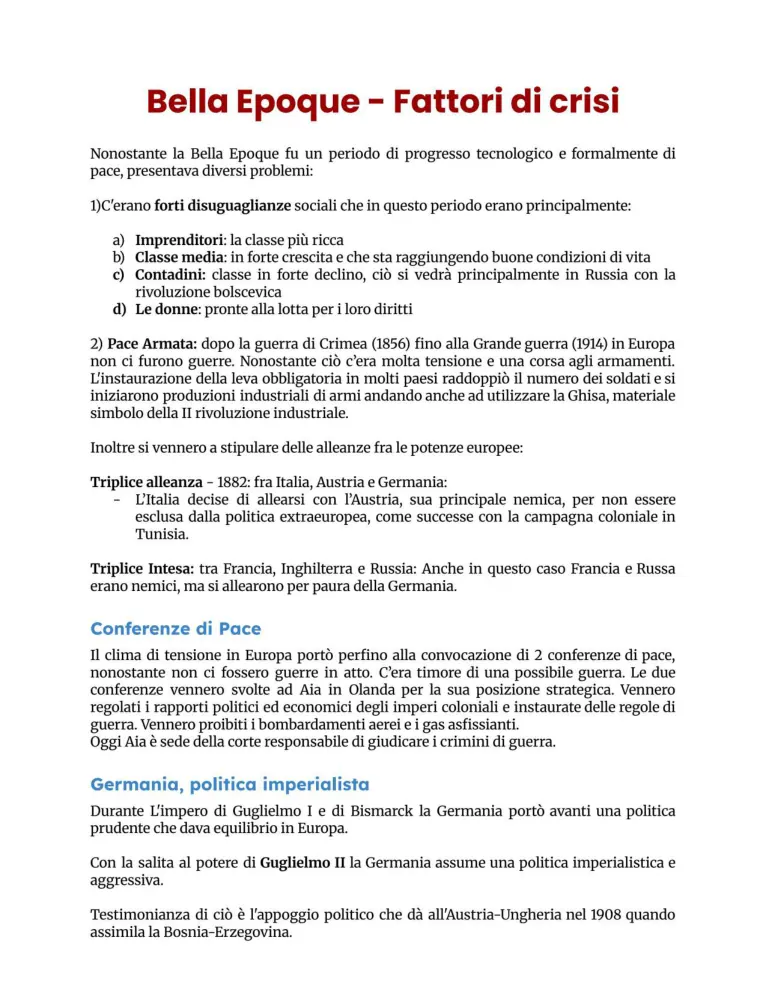
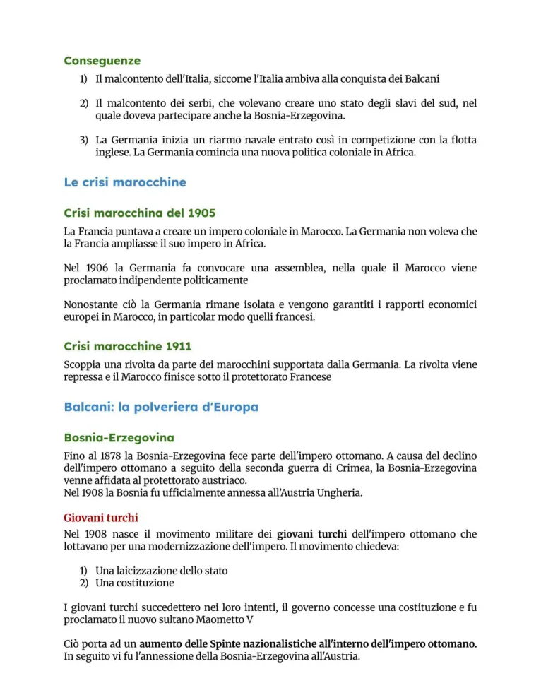
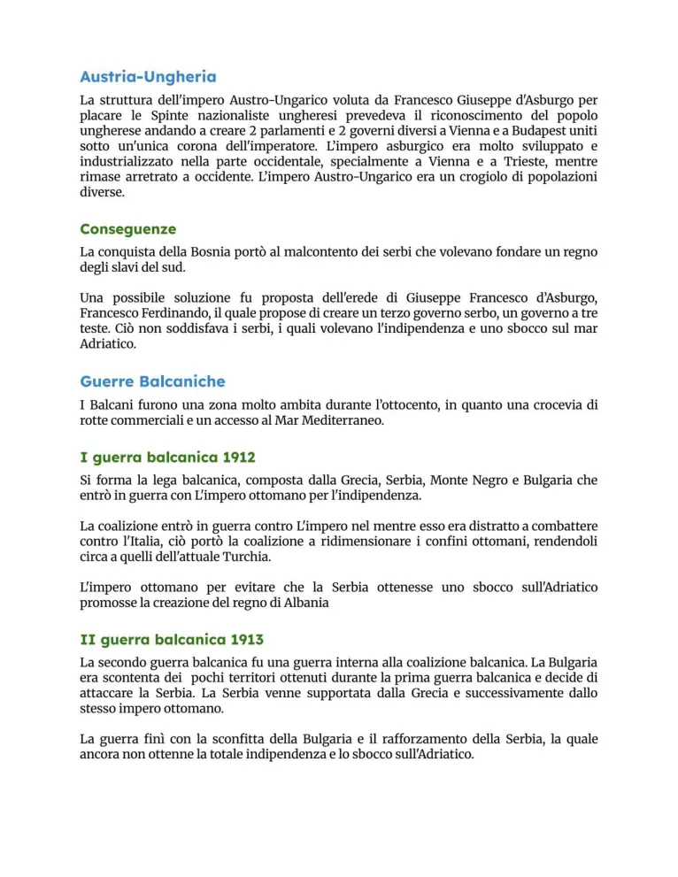
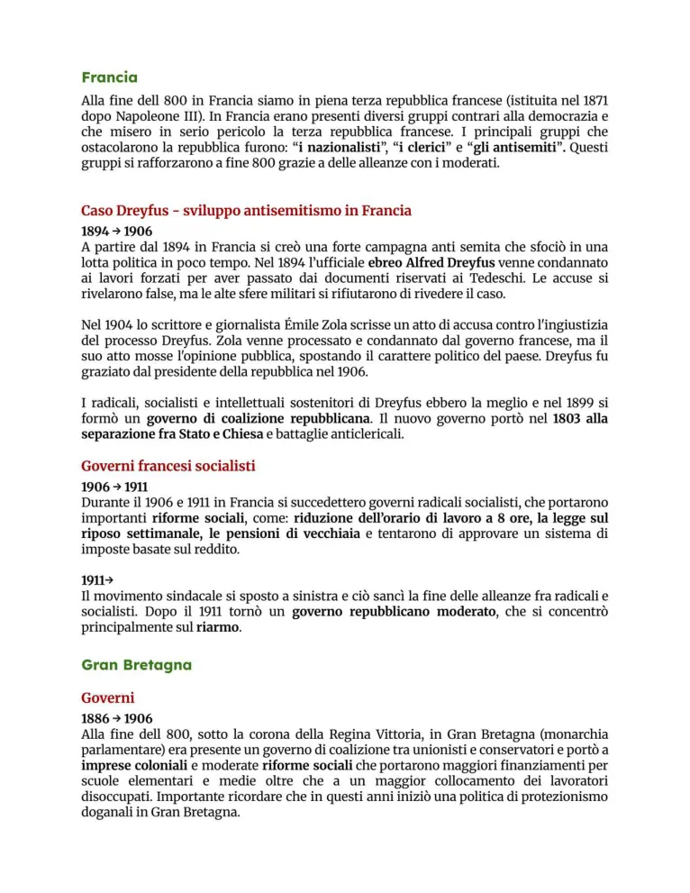
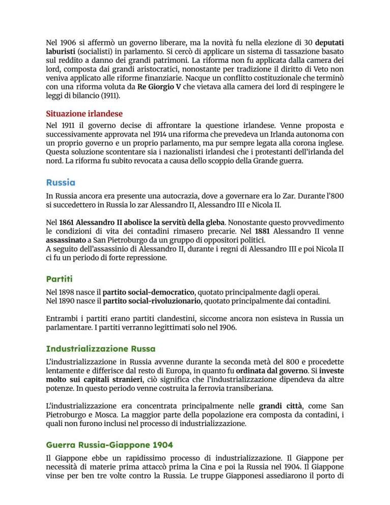
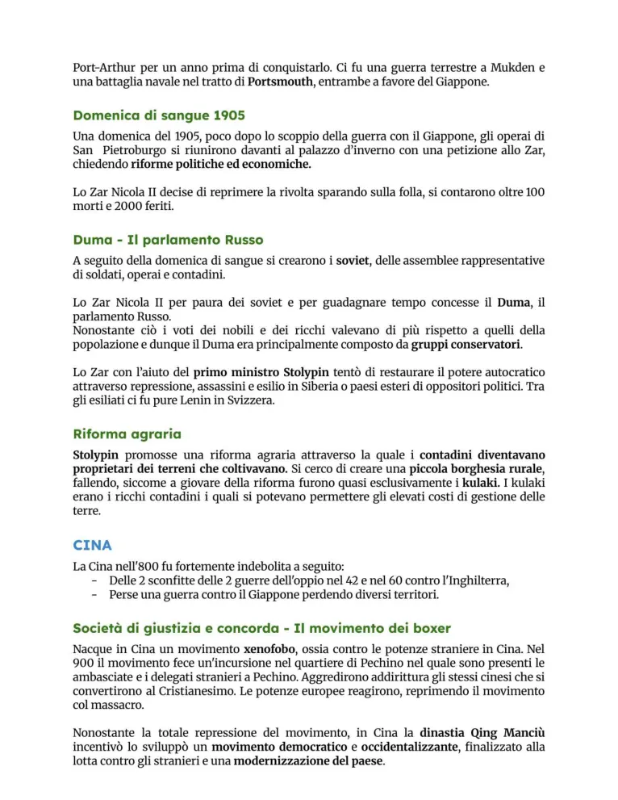
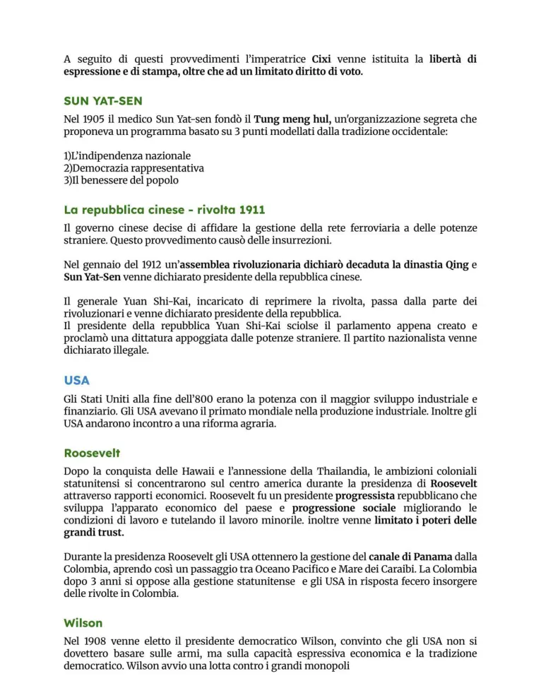
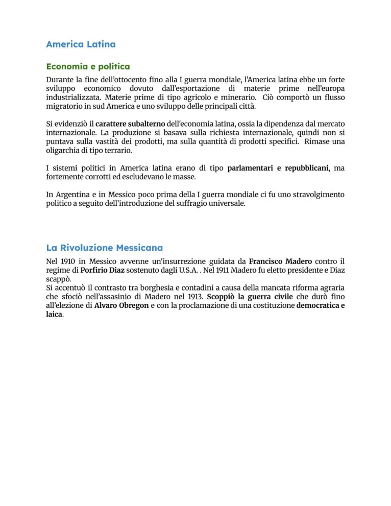

Belle Époque e fattori di crisi
Ottimismo, imperialismo, tensioni coloniali, crisi balcaniche, Russia, USA e America Latina.
Studio guidato
Ottimismo e contraddizioni
La Belle Époque è ricordata come fase di progresso tecnico, fiducia e crescita economica. Sotto l’apparenza di stabilità, però, crescono rivalità imperialistiche, tensioni sociali, nazionalismi e crisi diplomatiche che preparano il conflitto mondiale.
Imperialismo e conferenze
Le potenze europee competono per colonie, materie prime e mercati. La Conferenza di Berlino regola la spartizione dell’Africa, ma non elimina la rivalità tra Stati. La logica coloniale aumenta il prestigio delle potenze e alimenta conflitti.
Crisi marocchine e balcaniche
Le crisi marocchine mettono in contrasto Francia e Germania. Nei Balcani, il declino ottomano, il panslavismo, l’interesse russo e l’espansione austro-ungarica producono una zona instabile e decisiva per lo scoppio della guerra.
Russia, USA, America Latina
La Russia è attraversata da arretratezza, tensioni sociali e rivolte, culminate nella crisi del 1905. Gli USA rafforzano il proprio ruolo economico e internazionale, mentre in America Latina continuano dipendenza economica, pressioni straniere e rivoluzioni come quella messicana.
Sistema delle alleanze
La politica europea si irrigidisce in blocchi contrapposti. Le alleanze rendono una crisi locale capace di diventare una guerra generale.
Parole chiave
Pagine originali dal file
Le immagini sotto mantengono il riferimento diretto alle pagine del PDF usato come base del sito.








Quiz finale
Devi rispondere correttamente a tutte le 12 domande. Se ne sbagli anche solo una, il quiz si azzera e ricomincia da capo.